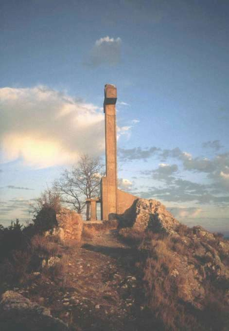
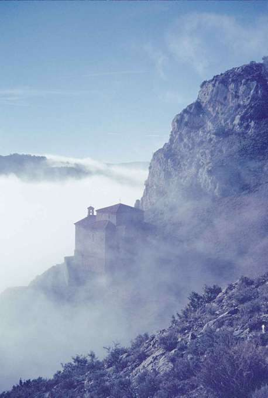

Monte Laturce
Clavijo · comarca del Iregua
- Distancia2,6 kmida y vuelta
- Desnivel165 m
- Tiempo orientativo1 h
- Dificultadmedia-baja
- Época recomendadatodo el año
- Terrenocarretera y senda
Este picudo monte está pensado, sin duda, para los montañeros sin mucho garbo que quieran hacer una “meritoria” ascensión. Una corta subida a pie desde el pueblo de Clavijo, pasando por la Ermita de Santiago, nos sitúa en uno de los miradores más impresionantes de La Rioja; cruz y altar incluidos. Esta clásica propuesta de mirador puede completarse con otra mucho menos frecuente y por ello más tentadora aún.
Para ello debemos aprovechar para acudir a este monte uno de esos días de invierno en que la densa niebla se asienta en el Valle del Ebro. Normalmente cuando lleguemos a la altura de Clavijo ya habremos superado la cota de la niebla, y a partir de aquí el espectáculo está asegurado. Casi dan ganas de caminar sobre las nubes.


Recorrido
Salimos de Clavijo por una calle asfaltada con fuerte pendiente. Tras un buen repecho llegamos hasta la Ermita de Santiago. Desde ella, por su parte trasera, tomamos un sendero que nos hará llegar, sin más dificultad que el desnivel a salvar, hasta la cima del Monte Laturce.


{kind=link}
{kind=link}